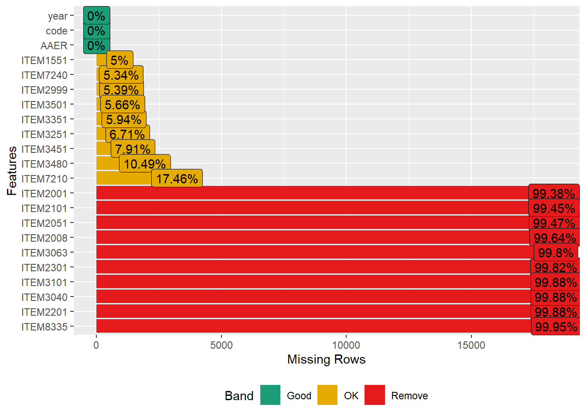
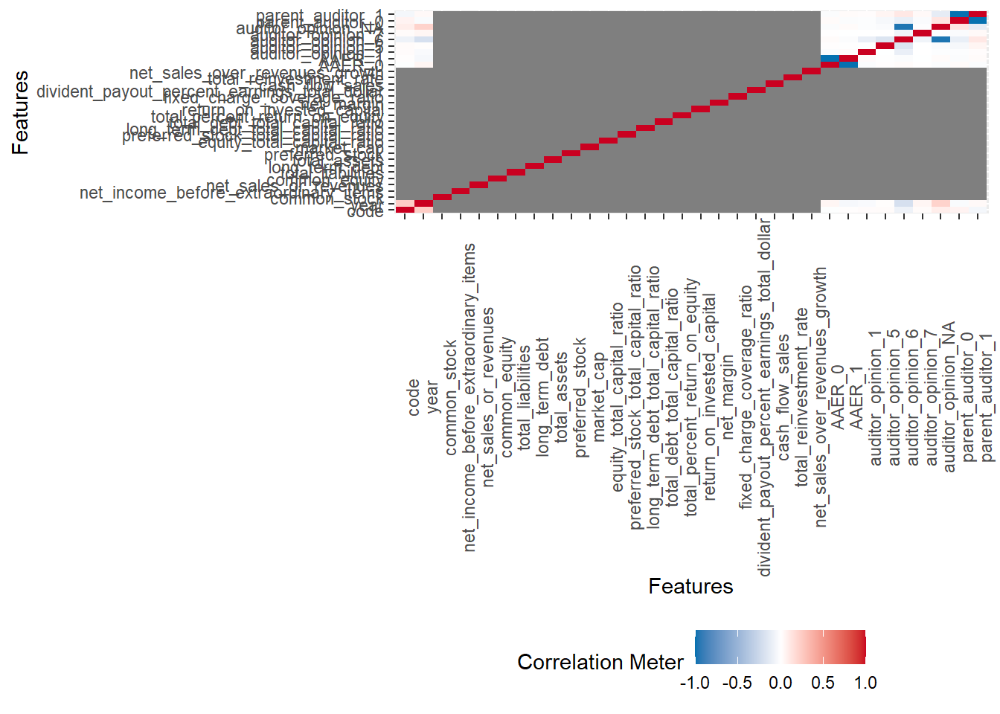
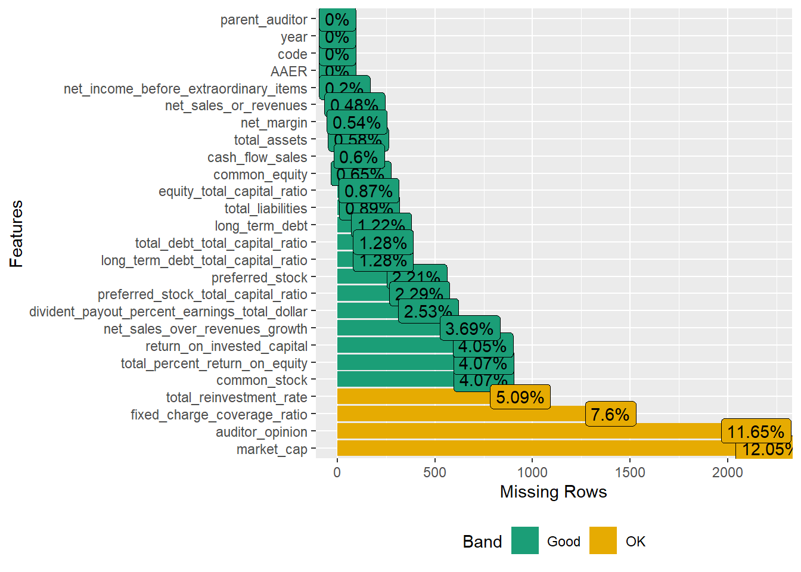
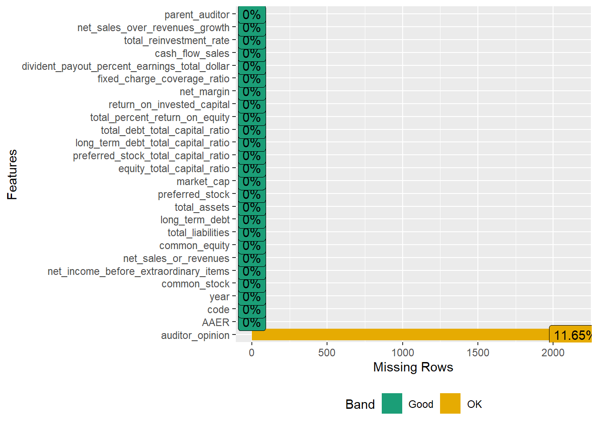
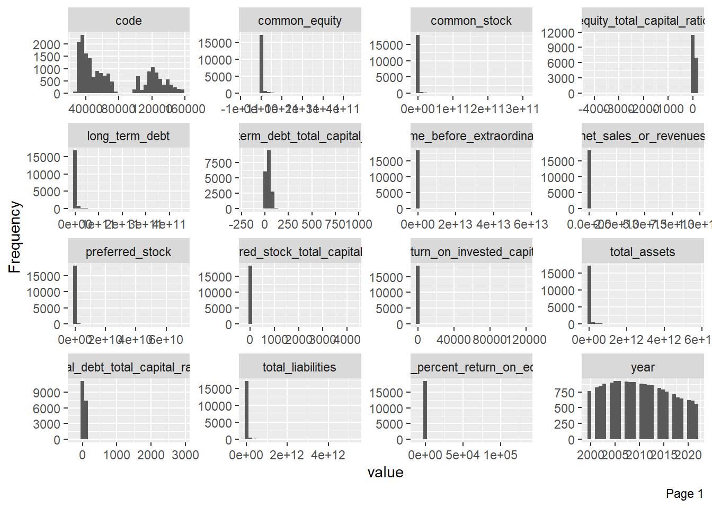
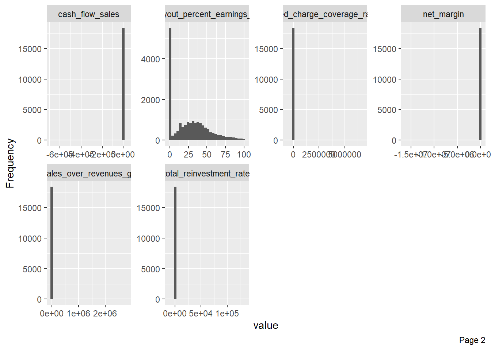
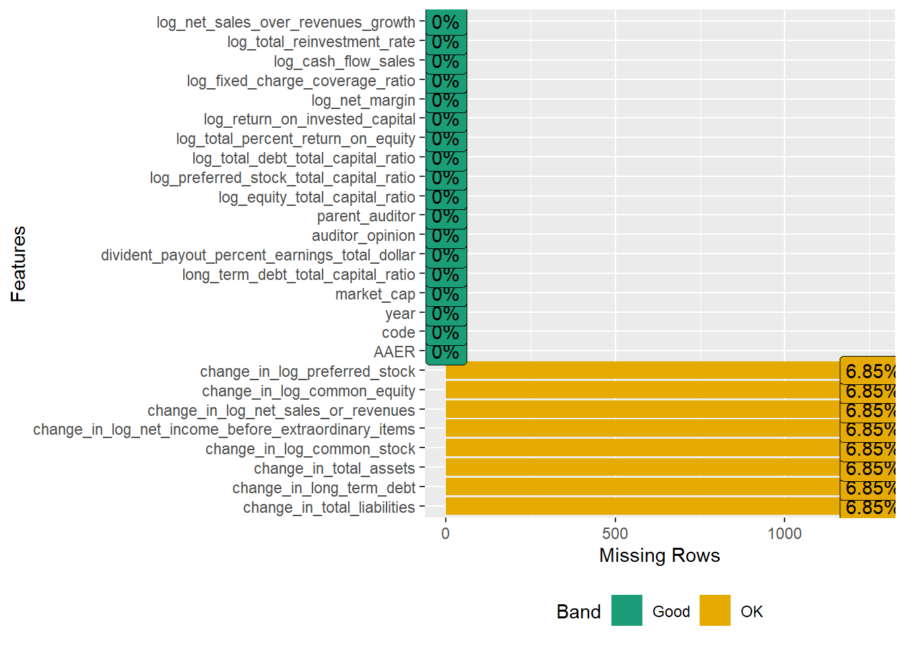
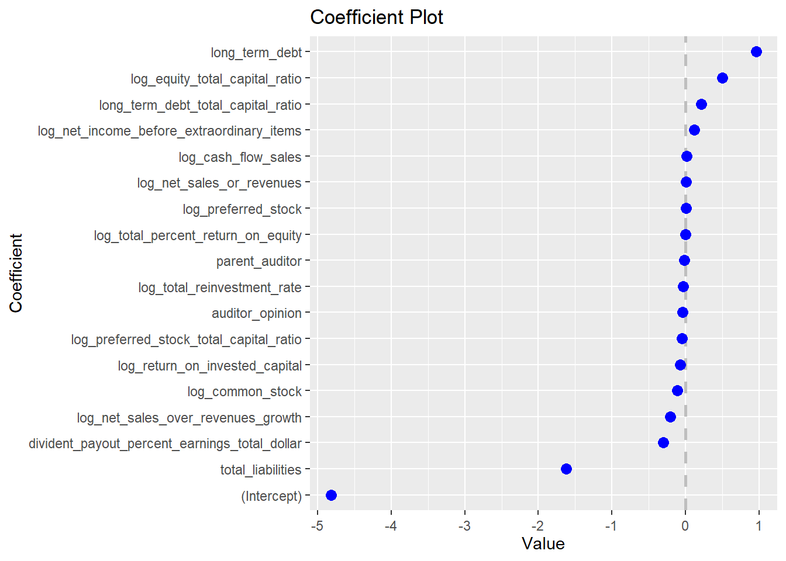
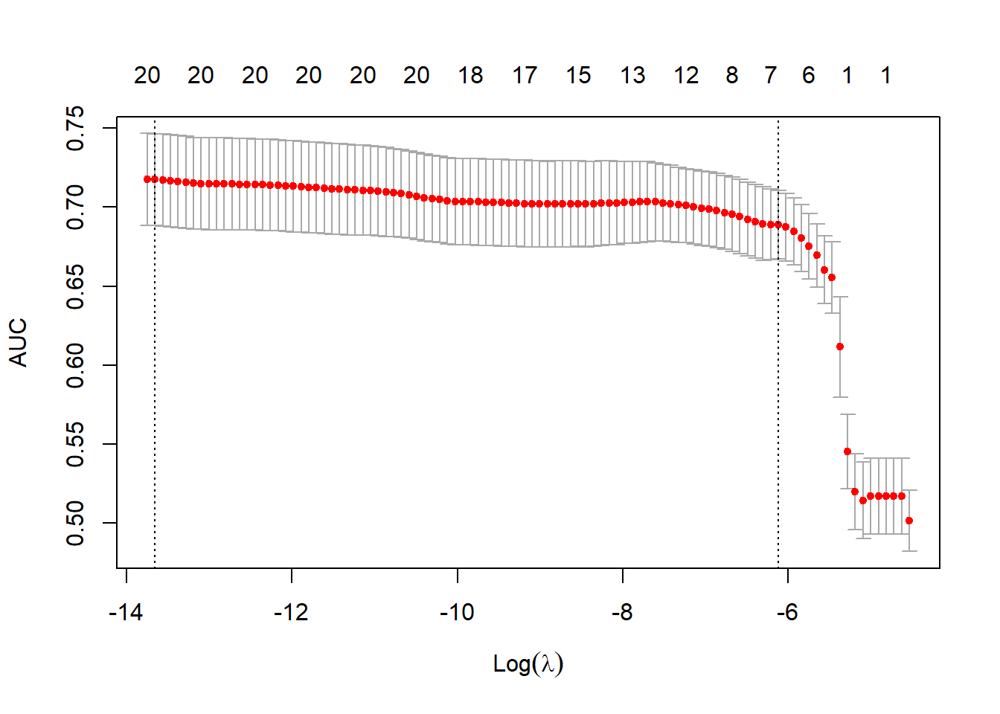

Warning: package 'stringr' was built under R version 4.3.3
── Attaching core tidyverse packages ──────────────────────── tidyverse 2.0.0 ──
✔ dplyr 1.1.3 ✔ readr 2.1.4
✔ forcats 1.0.0 ✔ stringr 1.5.1
✔ ggplot2 3.4.4 ✔ tibble 3.2.1
✔ lubridate 1.9.3 ✔ tidyr 1.3.0
✔ purrr 1.0.2
── Conflicts ────────────────────────────────────────── tidyverse_conflicts() ──
✖ dplyr::filter() masks stats::filter()
✖ dplyr::lag() masks stats::lag()
ℹ Use the conflicted package (<http://conflicted.r-lib.org/>) to force all conflicts to become errors
library(readxl)library(DataExplorer)
Warning: package 'DataExplorer' was built under R version 4.3.3
library(plotly)
Attaching package: 'plotly'
The following object is masked from 'package:ggplot2':
last_plot
The following object is masked from 'package:stats':
filter
The following object is masked from 'package:graphics':
layout
library(zoo)
Attaching package: 'zoo'
The following objects are masked from 'package:base':
as.Date, as.Date.numeric
library(moments)library(yardstick)
Attaching package: 'yardstick'
The following object is masked from 'package:readr':
spec
library(recipes)
Attaching package: 'recipes'
The following object is masked from 'package:stringr':
fixed
The following object is masked from 'package:stats':
step
library(parsnip)library(glmnet)
Loading required package: Matrix
Attaching package: 'Matrix'
The following objects are masked from 'package:tidyr':
expand, pack, unpack
Loaded glmnet 4.1-8
Attaching package: 'xgboost'
The following object is masked from 'package:plotly':
slice
The following object is masked from 'package:dplyr':
slice
library(caret)
Loading required package: lattice
Attaching package: 'caret'
The following objects are masked from 'package:yardstick':
precision, recall, sensitivity, specificity
The following object is masked from 'package:purrr':
lift
1. Exploratory Data Analysis
1.1 Original data
Load dataset
df <-read_csv("C:/Users/rayne/Documents/y4s2/ACCT420_forensic_forecasting/Bank Data 2000-2023 (Glossary).csv")
Warning: One or more parsing issues, call `problems()` on your data frame for details,
e.g.:
dat <- vroom(...)
problems(dat)
Rows: 162408 Columns: 525
── Column specification ────────────────────────────────────────────────────────
Delimiter: ","
chr (43): freq, Ticker Symbol_05601, Cusip_06004, Sedol_06006, Isin_06008,...
dbl (461): code, year_, Net Sales Or Revenues_01001, Costs Of Goods Sold_01...
lgl (16): Indicator Restatement Type Key Items In Us Dollars_11557, Indic...
dttm (1): Date Of Incorporation_18273
date (4): Fiscal Period End Date_05350, Inactive Date_07015, Date Added To...
ℹ Use `spec()` to retrieve the full column specification for this data.
ℹ Specify the column types or set `show_col_types = FALSE` to quiet this message.
162408 observations of 525 variables
Taking a look at the columns (525 columns too long so I wont run)
#names(df)
Firstly, filter companies whose General Code is 4 for banks.
df <- df |>filter(`General Industry Classification_06010`==4)count(df)
# A tibble: 1 × 1
n
<int>
1 46181
df |>select(code)|>unique()|>count()
# A tibble: 1 × 1
n
<int>
1 3053
From 162k observations to 46k observations once we filter banks only, and 3053 unique companies
# A tibble: 125 × 2
Nation_06026 country_counts
<chr> <int>
1 UNITED STATES 16839
2 JAPAN 2413
3 INDIA 1022
4 INDONESIA 938
5 CHINA 851
6 NORWAY 740
7 BRAZIL 681
8 DENMARK 677
9 FRANCE 676
10 UNITED KINGDOM 660
# ℹ 115 more rows
125 countries
1.2 AAER dataset AAER is a binary, 1 for higher likelihood of fraud and 0 otherwise
AAER inner joined onto full data (AAER only includes US firms?? Since it is published by the SEC)
# A tibble: 39 × 2
ITEM6026 n
<chr> <int>
1 UNITED STATES 16839
2 TURKEY 165
3 AUSTRALIA 144
4 ARGENTINA 135
5 UNITED KINGDOM 106
6 SOUTH AFRICA 94
7 BRAZIL 93
8 HONG KONG 88
9 PUERTO RICO 88
10 SPAIN 85
# ℹ 29 more rows
39 countries, most observations from the USA as expected
How many occurrences of AAER in relation to total observations per year?
215 occurrences of AAER in total out of 18941 total observations from 2000 to 2023 (2023 has 0 cases).
Takeaway from EDA:
The AAER dataset filters the original dataset from 162k rows to 18941 rows.
From 125 countries to 39 countries, mostly USA which makes sense since the AAER is published by the SEC.
From 3053 banking companies to 1262 banking companies.
Percent of AAER is very low each year, which makes sense since frauds are far and few between and companies which commit fraud tend to keep it well hidden.
As the years go by, the percent of AAER decreases, suggesting (just from this data) that there could be stricter regulations over time or companies got better at hiding.
0 cases in 2023 -> suggestive that we have no data on it as it is still early 2024. We should filter out 2023.
df_aaer <- df_aaer |>filter(year !=2023)
2. Feature engineering (and more EDA)
2 papers have been referenced to inspire our model building process. The first one enlightens us on the raw accounting line items and financial ratios to use to predict AAER, second one breaks down the formulas behind each financial ratio, with which we could use raw accounting line items to to manually derive.
From the journal of accounting research: Detecting Accounting Fraud in Publicly Traded U.S. Firms Using a Machine Learning Approach (Bao at el, 2015)
Predicting Material Accounting Misstatements (Dechow et al, 2011)
Additionally, based on our own text analysis and topic modelling, we realised that auditors play a huge role. Hence, aside from these well-researched accounting line items and financial ratios, we also have indicators for auditors.
2.1 EDA on 18 raw accounting line variables model
Selecting the 18 raw accounting line variables and convert to numeric
df_aaer1 <- df_aaer|># ITEM7210 is the market cap, not part of the accounting lineselect(AAER, code, year, ITEM2001, ITEM2051, ITEM2101, ITEM2008, ITEM2201, ITEM2301, ITEM2999, ITEM3040, ITEM3063, ITEM3101, ITEM3251, ITEM3351, ITEM3501, ITEM3451, ITEM7240, ITEM8335, ITEM1551, ITEM3480, ITEM7210)|>mutate(ITEM2999=as.numeric(ITEM2999), ITEM3351=as.numeric(ITEM3351))
plot_missing(df_aaer1)

We keep only the raw accounting line items that have more than 80% filled data (the yellow ITEMS). Those with too many NA values are not useful for our model. Hence, we are left with 8 accounting line items.
2.2 EDA on 22 variable model (8 accounting line + 12 financial ratio + 2 indicators for big4 auditor and auditor’s opinion)
Then, we add in 12 relevant financial ratios, auditor’s opinion and parent auditor (Big 4 indicator) variables to the 8 raw accounting line items filtered. Note: an extra variable is market cap (ITEM7210) not used in modelling but used in data imputation.
All variables in our 22 variable model passes the 80% filled data test. Now it’s time to explore on their correlation in order to prevent multicollinearity in our modelling process.
Firstly, we need to convert auditor’s opinion and parent auditor to factor.
df_aaer1 <- df_aaer1|>mutate(parent_auditor =case_when(grepl("KPMG|Deloitte|PricewaterhouseCoopers|Ernst & Young", parent_auditor, ignore.case =TRUE) ~"Big 4",TRUE~"Other" ))|># convert Big 4 into factor, 1 if "Big 4", 0 if "Other"mutate(parent_auditor=factor(parent_auditor,levels =c("Other", "Big 4"), labels =c(0, 1)))|>mutate(auditor_opinion=as.factor(auditor_opinion))
Now, we take a look at the correlation matrix. We are trying to prevent multicollinearity in our model. If variables are correlated with one another, we will drop one of the two correlated variables, as part of pre-processing.
ggplotly(df_aaer1 |>plot_correlation(maxcat=16))

The red correlation shows the variable correlated to itself (which is obviously 1), the blue correlation are the same factor variable’s factor levels (eg. AAER=0 and AAER=1) being correlated by -1, which is expected. There is no significant correlation between 2 different variables. As such, we conclude that all X variables are not correlated to one another and can be used in the logistic modelling process.
Since we have decided not to drop any variables, we now have to deal with all the NA values. Firstly, we group by company code and backfill the values based on the last recorded value in a company. This is better than merely imputing the mean of company code, as this is able to capture trends over time while a mean is unable to do so.
Function to backfill missing values within each group
backfill_group <-function(x) {if (any(!is.na(x))) {# If there are non-NA values, fill missing values with last non-NA valuena.locf(x, na.rm =FALSE) } else {# If all values are NA, return as is x }}
Next, we re-look at our NA after this first step of imputation, it looks way better. It is worth noting at this point that parent_auditor has no NA values because when I factorised it to “Big 4” and “Other” (non-big 4), the small amount of NA values (6%) were characterised as the level of “Other”.
plot_missing(df_aaer2)

For the variables there were not able to be filled by backfilling, this suggests that these are companies with NA data in every record. In this case, it is unwise to fill it by imputing the mean of the entire column as one would usually do, and I decided to group by market cap then take the mean.
This means that if the company is large, then it will be imputed by a large cap mean values, and small companies will be imputed by small cap mean values. Hence, this allows us to impute data as accurately as possible by assigning small companies and large companies different means in accordance to their market cap.
Firstly, we have to convert market cap to factor, and levels are sorted ordinally.
df_aaer2 = df_aaer2 %>%mutate(market_cap =case_when( market_cap >200000000000~"Mega-cap", market_cap >10000000000& market_cap <=200000000000~"Large-cap", market_cap >2000000000& market_cap <=10000000000~"Mid-cap", market_cap >250000000& market_cap <=2000000000~"Small-cap", market_cap <=250000000~"Micro-cap" ))mktcap_order =c("Unknown", "Micro-cap", "Small-cap", "Mid-cap","Large-cap", "Mega-cap") df_aaer2$market_cap =na.fill(df_aaer2$market_cap, fill ="Unknown") df_aaer2$market_cap <-factor(df_aaer2$market_cap,levels = mktcap_order, ordered =TRUE)df_aaer2 <- df_aaer2|>group_by(market_cap)|># For all variables except AAER (y variable), if na, take mean, else take value in the recordmutate(across(-c(AAER,auditor_opinion, parent_auditor), ~ifelse(is.na(.), mean(., na.rm=TRUE), .)))|>ungroup()plot_missing(df_aaer2)

Now all that’s left is to fill auditor_opinion NA values. This is tricky as auditor_opinion is not numeric, but categorical, so we cannot impute based on mean or backfilling, etc. And each level means a different thing. Therefore, we have to use accountancy logic to impute NA values. Ultimately, we decided to take a conservative approach to impute NA with 1, “not audited”.
Lastly, we have to look at how skewed the data is. For skewed X variables, it is imperative that we perform log transformation such that data is normalized. For this, I tried to use a histogram to check skewness.
df_aaer2|>plot_histogram()


Imo, it is hard to visually evaluate which variables are skewed based on the histogram. Hence, we can use a fxn.
log_and_drop_skewed_numeric_columns <-function(df, threshold, small_number) {for (col innames(df)) {if (is.numeric(df[[col]])) { skew <-skewness(df[[col]])if (abs(skew) > threshold) { log_col_name <-paste0("log_", col)# Log-transform positive values with the addition of a small number df[[log_col_name]] <-ifelse(df[[col]] >0, log(df[[col]] + small_number), df[[col]]) df[[col]] <-NULL } } }return(df)}# Set the skewness threshold (absolute value)skewness_threshold =10small_number =0.01# Call the function and get the list of skewed columns df_aaer3 =log_and_drop_skewed_numeric_columns(df_aaer2, skewness_threshold, small_number)
Warning in log(df[[col]] + small_number): NaNs produced
Warning in log(df[[col]] + small_number): NaNs produced
Warning in log(df[[col]] + small_number): NaNs produced
Warning in log(df[[col]] + small_number): NaNs produced
Warning in log(df[[col]] + small_number): NaNs produced
Warning in log(df[[col]] + small_number): NaNs produced
Warning in log(df[[col]] + small_number): NaNs produced
Warning in log(df[[col]] + small_number): NaNs produced
Warning in log(df[[col]] + small_number): NaNs produced
Warning in log(df[[col]] + small_number): NaNs produced
Warning in log(df[[col]] + small_number): NaNs produced
Warning in log(df[[col]] + small_number): NaNs produced
Warning in log(df[[col]] + small_number): NaNs produced
Warning in log(df[[col]] + small_number): NaNs produced
df_aaer3 is log transformed. df_aaer2 is the non log-transformed data.
Running both the df_aaer2 and df_aaer3 models in a seperate test script produced good results in terms of AUC. However, we could explore more…
We also saw that the raw accounting line items are inaccurate because of currency inconsistencies. Some records are in USD, while other records from other countries are in other currencies (eg. Argentina uses peso, Singapore uses SGD…).
This is captured in ITEM6099, “Currency Of Document”.
df_aaer %>%select(ITEM6099)|>unique()
# A tibble: 33 × 1
ITEM6099
<chr>
1 USD
2 EUR
3 <NA>
4 MXN
5 ESP
6 CLP
7 ARS
8 COP
9 VES
10 HKD
# ℹ 23 more rows
To mitigate this problem, we came up with 2 more models:
A percent change model, where each record is a percent change relative to the previous year.
Potential flaw: Percent change model would not be able to differentiate between large companies and small companies, as the absolute values/magnitude of values are not captured. Instead, percent change values are captured.
A currency adjusted model, where each record has been transformed from its respective foreign currency into the USD.
2.3 EDA on percent change model
One issue of taking percent change is that some variables (log preferred stock, long term debt) contain “0” in some of their records. In this case, the percent change will be infinity as even an increase of +1 to 0 is infinite. Hence, I will add an arbitrary small number to very small lagged values, to ensure there are no infinite percent change values.
df_aaer4 <- df_aaer3 %>%group_by(code) %>%arrange(code, year) %>%mutate(across(c(3:5, 11:15), # Select the 8 raw accounting line items~ { denominator <-lag(.) denominator[abs(denominator) <0.01] <-0.01# Replace very small values with 0.01 ((. -lag(.)) / denominator) *100 },.names ='change_in_{col}')) %>%# de-selecting the variables which we applied the percent change toselect(-c(log_common_equity, log_net_income_before_extraordinary_items, log_net_sales_or_revenues, total_assets, total_liabilities, log_common_stock, long_term_debt, log_preferred_stock)) %>%ungroup()
plot_missing(df_aaer4)

NA values occur from records where there are no previous record from a year before. (eg. if 2000 is the first year of incidence, it is NA as there is no 1999 data to calculate the percent change).
For these NA values, I decided to just filter out the first record rows which contain these NA values. This is akin to simply dropping NA.
Warning in log(df[[col]] + small_number): NaNs produced
Warning in log(df[[col]] + small_number): NaNs produced
Warning in log(df[[col]] + small_number): NaNs produced
Warning in log(df[[col]] + small_number): NaNs produced
Warning in log(df[[col]] + small_number): NaNs produced
Warning in log(df[[col]] + small_number): NaNs produced
Warning in log(df[[col]] + small_number): NaNs produced
Warning in log(df[[col]] + small_number): NaNs produced
Warning in log(df[[col]] + small_number): NaNs produced
Warning in log(df[[col]] + small_number): NaNs produced
Warning in log(df[[col]] + small_number): NaNs produced
2.5 Conclusion of feature engineering/EDA
In conclusion, we have build and tested 4 different model loadouts:
raw model (df_aaer2)
log-transformed model (df_aaer3)
log-transformed percent change model (df_aaer4)
log-transformed currency adjusted model (df_aaer5)
Upon running my model test script, I found that model 2 had the best AUC results (alogorithm: Xgboost), while model 4 was a very close second (also Xgboost). Therefore, for the Model building section, I will focus on model 2.
3. Model building
For model 2: log-transformed model
3.1 Splitting train test set
Creating a custom function that will perform stratified sampling in 80-20 train test ratio. We use stratified sampling as AAER occurrences are very small, and stratified sampling is able to deal with class imbalances.
split_df <-function(df){set.seed(123)split <-initial_split(df, prop =0.8, strata = AAER)# Extract training and testing datatrain_data <-training(split)test_data <-testing(split)# Add indicator column for test data (1 for test, 0 for train)test_data <- test_data %>%mutate(Test =1)# Add indicator column for train data (1 for test, 0 for train)train_data <- train_data %>%mutate(Test =0)# Combine train and test datadf <-bind_rows(train_data, test_data)}
Create train test split and remove columns not in the model building process
From the logistic regression, the significant variables in predicting AAER are total liabilities, long-term debt, total assets, long term debt to total capital ratio, total dollar percent earnings dividend payout, log preferred stock, log preferred stock to total capital ratio, log total debt to total capital ratio, and log total reinvestment rate.
The coefficient on these variables are how much these variables affect our prediction. For example, a 1 unit increase in total liabilities leads to a -1.438e-11 probability of AAER (total liabilities reduces the probability of AAER), while a 1 unit increase in long term debt leads to a 3.821e-11 probability of AAER (long-term debt increases the probability of AAER), and so on…
Confusion Matrix and Statistics
Reference
Prediction 0 1
0 3633 39
1 5 6
Accuracy : 0.9881
95% CI : (0.984, 0.9913)
No Information Rate : 0.9878
P-Value [Acc > NIR] : 0.4798
Kappa : 0.2105
Mcnemar's Test P-Value : 6.527e-07
Sensitivity : 0.133333
Specificity : 0.998626
Pos Pred Value : 0.545455
Neg Pred Value : 0.989379
Prevalence : 0.012218
Detection Rate : 0.001629
Detection Prevalence : 0.002987
Balanced Accuracy : 0.565979
'Positive' Class : 1
Analysis: Classification matrix with a 0.5 cut-off demonstrates…
High Accuracy of 98.81%.
Low Sensitivity of 13.33%, due to the class imbalances even despite stratified sampling.
High Specitivity of 99.9%.
This could be due to the class imbalances where there are too many instances of the majority class in the data. For example,
No Information Rate (NIR) is the accuracy that could be achieved by always predicting the majority class. In this case, the NIR is 0.9878, which suggests that the majority class constitutes 98.78% of the dataset.
aucs <-c(auc_in$.estimate, auc_out$.estimate)names(aucs) <-c("In sample AUC", "Out of sample AUC")aucs
In sample AUC Out of sample AUC
0.7475618 0.7451041
Analysis: The logistic regression performs well with AUC of around 0.75 for both in-sample and out-sample.
3.3 Lasso
Using tidymodels
aaer_eq <-as.formula(paste("AAER ~ long_term_debt+long_term_debt_total_capital_ratio+auditor_opinion+log_common_stock+log_net_sales_or_revenues+log_preferred_stock+log_preferred_stock_total_capital_ratio+log_total_percent_return_on_equity+log_net_margin+log_cash_flow_sales+log_net_sales_over_revenues_growth+total_liabilities+total_assets+divident_payout_percent_earnings_total_dollar+parent_auditor+log_net_income_before_extraordinary_items+log_common_equity+log_equity_total_capital_ratio+log_return_on_invested_capital+log_fixed_charge_coverage_ratio+log_total_reinvestment_rate"))aaer_formula <- aaer_eq# need to convert AAER, auditor_opinion, parent_auditor from factor to numeric for prep() fxn to workdf_aaer3 <- df_aaer3 |>mutate(AAER =as.numeric(as.character(AAER)), auditor_opinion =as.numeric(as.character(auditor_opinion)))|>mutate(parent_auditor =as.numeric(as.character(parent_auditor)))train <- df_aaer3 %>%filter(Test ==0)test <- df_aaer3 %>%filter(Test ==1)rec <-recipe(aaer_formula, data = train) %>%step_zv(all_predictors()) %>%# Drop any variables with zero variancestep_center(all_predictors()) %>%# Center all prediction variables (i.e. avg value = 0)step_scale(all_predictors()) %>%# Scale all prediction variables (scaled to Z-score)step_intercept() %>%# Add an intercept to the modelstep_num2factor(all_outcomes(), ordered = T, levels=c("0","1"),transform =function(x) x +1) # Convert DV to factor for parsnip laterprepped <- rec %>%prep(training=train) # an intermediate step# "bake" your recipe to get data readytrain_baked <-bake(prepped, new_data = train)test_baked <-bake(prepped, new_data = test)train_model <-logistic_reg(mixture=1, penalty=1) %>%# mixture = 1 sets LASSOset_engine('glmnet') %>%# use the glmnet package to compute thisfit(aaer_formula, data = train_baked)coefplot(train_model$fit, sort='magnitude')

cross validation to help us decide which model to pick
rec2 <-recipe(aaer_formula, data = train) %>%step_zv(all_predictors()) %>%# Drop any variables with zero variancestep_center(all_predictors()) %>%# Center all prediction variables (i.e. avg value = 0)step_scale(all_predictors()) %>%# Scale all prediction variables (scaled to Z-score)step_intercept() # Add an intercept to the model# not using parsnip's logistic_reg, so don't convert AAER output to factorprepped2 <- rec2 %>%prep(training=train)test_prepped2 <- rec2 %>%prep(training=test)# "Juice" your recipe to get data for other packagestrain_x <-juice(prepped2, all_predictors(), composition ="dgCMatrix")train_y <-juice(prepped2, all_outcomes(), composition ="matrix")test_x <-juice(test_prepped2, all_predictors(), composition ="dgCMatrix")test_y <-juice(test_prepped2, all_outcomes(), composition ="matrix")# Cross validationset.seed(75347) #for reproducibilitycvfit =cv.glmnet(x=train_x, y=train_y, family ="binomial", alpha =1,type.measure="auc")plot(cvfit)

Analysis:
Lambda min (lower penalty) suggests around 20 variables, while lambda 1se (higher penalty) suggests around 6 to 7 variables being included in the model.
We use lambda.min model when we want the best performing model, as this is the model that maximises AUC. We use lambda.1se model for a simpler but more explainable model (higher penalty > less variables > more explainable), which still performs very well in terms of AUC.
The coefficient plot shows the variables retained by both models respectively, and the further away from the 0 line, the more these variables contribute to the model’s prediction. If it is to the right, it contributes more positively and if it is to the left, it contributes more negatively.
For the lambda.min model:
Most variables are close to zero with log_common_equity being abnormally large and positive. This suggests that log_common_equity is heavily influencing the performance of the lambda.min model, which might lead to biased and inconsistent predictions when new data is introduced.
For the lambda.1se model:
Most variables are closer to each other in absolute value, model is less biased towards X variables, and would perform more consistently.
In sample, lambda.min Out of sample, lambda.min In sample, lambda.1se
0.7155628 0.6839778 0.6888045
Out of sample, lambda.1se
0.6995785
Analysis: Which Model do we prefer, lambda.min or lambda.1se?
lambda.min AUC: in-sample > out-sample
Best performing model at the expense of potentially selecting a more complex model.
lambda.1se AUC: out-sample > in-sample
A simpler model with reduced predictive performance but better at taking in new data.
We decide that lambda.1se is better than lambda.min, due to better explainability and out-of-sample performance (lambda1se out-sample AUC > lambda.min out-sample AUC). In data science, there is often a trade-off between model explanability and performance. In this case, since the simpler model lambda.1se also happens to perform better (based on out-sample AUC), we conclude that it is the better LASSO model. Therefore, our later analysis of the important LASSO variables will be based on the lambda.1se model instead of the lambda.min model.
3.4 Xgboost
xgboost_rec <-recipe(aaer_formula, data = train) %>%step_zv(all_predictors()) %>%# Drop any variables with zero variancestep_center(all_predictors()) %>%# Center all prediction variables (i.e. avg value = 0)step_scale(all_predictors()) %>%# Scale all prediction variables (scaled to Z-score)step_intercept()prepped3 <- xgboost_rec %>%prep(training=train)test_prepped3 <- xgboost_rec %>%prep(training=test)train_x3 <-juice(prepped3, all_predictors(), composition ="dgCMatrix")train_y3 <-juice(prepped3, all_outcomes(), composition ="matrix")test_x3 <-juice(test_prepped3, all_predictors(), composition ="dgCMatrix")test_y3 <-juice(test_prepped3, all_outcomes(), composition ="matrix")# Cross validationset.seed(482342) #for reproducibilitylibrary(xgboost)# model setupparams <-list(max_depth=10,# split 9 timeseta=0.2,gamma=10,min_child_weight =5,objective ="binary:logistic") # we didn't need to convert to factor because it's done here# run the modelxgbCV <-xgb.cv(params=params,data=train_x3, # x datalabel=train_y3, # y datanrounds=100, # how many times to runeval_metric="auc",nfold=10, # cross validationstratified=TRUE) # stratified sampling
# re-run model at optimal levelnumTrees <-min(which( xgbCV$evaluation_log$test_auc_mean ==max(xgbCV$evaluation_log$test_auc_mean) ))# Optimal model is the one that maximises the validation (test) auc# min is used to extract the smallest model number where test auc is the best# in this case, we find that it is 41fit_optxgb <-xgboost(params=params,data = train_x3,label = train_y3,nrounds = numTrees, # re-run model at this optimal leveleval_metric="auc")
In sample, XGBoost Out of sample, XGBoost
0.9757430 0.8446033
Analysis: The best overall model is the XGBoost model, as it has the highest AUC scores. This makes sense as XGBoost is able to iteratively run better models which builds upon previous models.
However, the model might be overfitted due to an extremely high in-sample AUC score (0.976),
but still performs very well on unseen data (AUC of 0.845).
Lastly, these are the important variables to the xgboost model.
4. Conclusion on the log- transformed models
4.1 Comparisons between the 3 classification models:
4.1.1 Performance of all models (out-of-sample AUC)
AUC metric is comprehensive and tells us information on both the specificity and sensitivity, hence it is most relevant out-of-sample metric we chose to compare across the our models.
logistic regression: 0.7451041
lambda.min LASSO: 0.6839778
lambda.1se LASSO: 0.6995785
xgBoost: 0.8446033
xgBoost is the best performing model based on out-sample AUC.
4.1.2 Important variables across all models
Upon comparing the significant variables from the logistic regression, and important variables for the lambda.1se LASSO and xgBoost models, these are the common variables that are important across all models:
❑ Total Liabilities
❑ Long-term Debt
❑ Long-term Debt to Total Capital Ratio
➢ All dealing with debts and liabilities.
➢ Higher debts balance tends to increase the probability of accounting misstatements.
❑ Log Preferred Stock
❑ Log Preferred Stock to Total Capital Ratio
➢ Increased Preferred Stock tends to increase probability of accounting misstatements.
➢ Another form of raising money for the bank.
4.1.3 Implications
We could look into researching more into the effects of high long-term debt and preferred stock on banks and accounting misstatements, as these are the main variables consistent across our logistic regression, lasso, and xgBoost models.
5. Project conclusion
6. Appendix: Other 3 models performance (based on the AUC metric)
Section 5 prints out the AUC output across all the other models.
Creating a custom function to derive AUC for logistic regression
$aucs_xgb
In sample, XGBoost Out of sample, XGBoost
0.9756983 0.6607232
$aucs_CV_combined
In sample, lambda.min Out of sample, lambda.min In sample, lambda.1se
0.6974038 0.6733187 0.6653501
Out of sample, lambda.1se
0.6987844
# 22 variable percent change log model (added percent change to the 8 variables)aaer_eq <-as.formula(paste("AAER ~ change_in_long_term_debt+long_term_debt_total_capital_ratio+auditor_opinion+change_in_log_common_stock+change_in_log_net_sales_or_revenues+log_preferred_stock_total_capital_ratio+log_total_percent_return_on_equity+log_net_margin+log_cash_flow_sales+log_net_sales_over_revenues_growth+change_in_total_liabilities+change_in_total_assets+divident_payout_percent_earnings_total_dollar+parent_auditor+change_in_log_net_income_before_extraordinary_items+change_in_log_common_equity+log_equity_total_capital_ratio+log_return_on_invested_capital+log_fixed_charge_coverage_ratio+log_total_reinvestment_rate+change_in_log_preferred_stock"))lasso_xgboost_auc(df_aaer4)
$aucs_xgb
In sample, XGBoost Out of sample, XGBoost
0.9404513 0.7922464
$aucs_CV_combined
In sample, lambda.min Out of sample, lambda.min In sample, lambda.1se
0.6858110 0.7047249 0.6549695
Out of sample, lambda.1se
0.6966743
# 22 variable currency adjusted model (adjusting the 8 raw variables to USD)aaer_eq <-as.formula(paste("AAER ~ adj_net_income_before_extraordinary_items+adj_common_equity+adj_total_liabilities+adj_long_term_debt+adj_total_assets+adj_net_sales_or_revenues+long_term_debt_total_capital_ratio+divident_payout_percent_earnings_total_dollar+auditor_opinion+parent_auditor+log_adj_common_stock+log_adj_preferred_stock+log_equity_total_capital_ratio+log_preferred_stock_total_capital_ratio+log_total_debt_total_capital_ratio+log_total_percent_return_on_equity+log_return_on_invested_capital+log_net_margin+log_fixed_charge_coverage_ratio+log_cash_flow_sales+log_total_reinvestment_rate+log_net_sales_over_revenues_growth"))lasso_xgboost_auc(df_aaer5)
$aucs_xgb
In sample, XGBoost Out of sample, XGBoost
0.9694841 0.8264798
$aucs_CV_combined
In sample, lambda.min Out of sample, lambda.min In sample, lambda.1se
0.7038530 0.6973123 0.6834450
Out of sample, lambda.1se
0.6864822